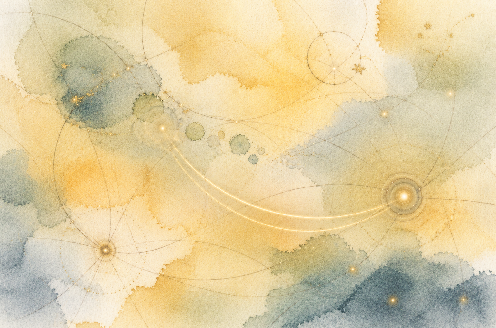
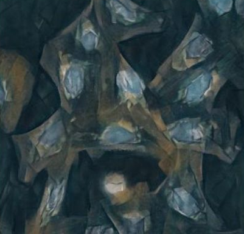

Technical Write-up
You Could Have Invented Dr.GRPO Yourself
A ground-up walkthrough of modern RL for LLMs: from REINFORCE to Dr.GRPO, showing how each algorithm was forced by exactly one broken thing in the previous one.

Technical Write-up
You Could Have Invented Entropy Yourself
A ground-up derivation that runs from a number-guessing game to the loss function of a language model: halving, bits, entropy, cross-entropy, perplexity, and KL divergence, each step the obvious next move from the last.

Technical Write-up
A Deep Dive into Neural Style Transfer
An implementation and explanation of the seminal 2015 paper by Gatys et al., breaking down the concepts of content and style loss.